Case study 4: Using serosim to assess the performance of seroepidemiological inference methods
Source:vignettes/case_study_4_inference.Rmd
case_study_4_inference.Rmd1.0 Outline
This vignette demonstrates how serological data simulated from a
complex, realistic serosim model can be used to assess the
accuracy of various seroepidemiological inference methods. The aim is to
compare estimates for key statistics such as incidence, exposure history
and within-host kinetics parameters to their known, true values from a
simulated dataset. This process can help to understand how ignoring key
mechanisms and making simplifying assumptions in the fitted model might
introduce biases and errors into our estimates when fitting to real
data.
Outline:
- Simulate a serological dataset using a moderately complex
serosimmodel with varying assumptions about immunity and vaccination. - Estimate the ground-truth force of infection (FOI) using a
serocatalytic model with the
serofoiR-package. We will see well how serocatalytic models are able to re-estimate the FOI despite using simple classifications for seropositivity which ignore underlying complexity in the antibody model and immunity model. - Infer individual-level exposures and antibody kinetics parameters
using an infection history reconstruction methods from the
serosolverR-package. We will see that the the reconstructed infection histories are broadly accurate, but that there are some slight biases in the inferred antibody kinetics parameters and attack rates.
1.1 Motivation
Serological data is commonly used to estimate past epidemiological dynamics. The presence of antibodies against a pathogen are indicative of prior exposure (either through vaccination or infection), and thus the level, kinetics and distribution of antibody measurements across time and age can be used to inform periods of high and low exposure rates. Virtually all approaches to inference using serology are underpinned by the same simple model: individuals become seropositive at some rate proportional to the FOI (which might vary over time), and remain seropositive for some duration governed by an assumed within-host model. Inference methods range in their complexity, from simple models assuming a constant FOI over time and life-long seropositivity, to time-varying FOI with nested within-host models accounting for antibody boosting and waning kinetics.
However, even the most complex models are simplifications of reality. The model being fitted to the data will always be misspecified, as it is infeasible to accurately capture all mechanisms underpinning the data-generating process, both in terms of epistemology and identifiability issues when estimating model parameters. Regardless, we still aim to fit models and perform useful inferences from our data. It is therefore important to understand if estimates using simple fitted models are reliable despite knowing that many of the true underlying generative mechanisms are ignored.
1.2 Setup
We will use the outputs of serosim with three R-packages
for estimating epidemic dynamics using serological data. These are serofoi
and serosolver.
serofoi uses the rstan package to estimate the
FOI by fitting serocatalytic models to age-stratified seroprevalence
data, whereas serosolver uses a custom Markov chain Monte
Carlo (MCMC) algorithm to estimate exposure histories, attack rates and
parameters of a simple antibody kinetics using individual-level antibody
titer data. Please refer to serofoi
and serosolver
websites for more information.
2. Using serosim to generate a synthetic dataset
2.1 Simulation settings, demography and biomarker map
We will simulate a generic serological study of 1000 individuals of varying ages split across two locations, one with a high FOI that decreases over time and the other with relatively low FOI that increases over time. The simulation period will be run at an annual resolution (i.e., individuals can get infected once per year) for 50 years. We assume that 70% of the population are in an urban setting and 30% in a rural setting.
We will assume that the we only measure one biomarker type (IgG) which can be boosted through either natural infection or vaccination. For the first simulation, we will assume that there is no vaccination, and then see how well the inference methods perform when vaccination is included in the simulation, but not the inference model.
## Specify the number of time periods to simulate
times <- seq(1,50,by=1)
simulation_settings <- list("t_start"=1,"t_end"=max(times))
## Generate the population demography tibble
## Specify the number of individuals in the simulation; N=1000
N <- 1000
## Assign individuals into either urban or rural location
aux_demography <- list("Group"=list("name"="location","options"=c("Urban","Rural"),"distribution"=c(0.7,0.3)))
demography <- generate_pop_demography(N=N, times=times,aux=aux_demography,age_min=0,prob_removal=0)
#> Joining with `by = join_by(i)`
demography$group <- as.numeric(factor(demography$location, levels=c("Urban","Rural"))) ## Convert the location ID to the group ID for the main simulation.
## Vaccination will be determined by age and doses, not dependent on biomarker quantity
max_events <- c(10,2) ## Maximum of 10 exposure ID 1 events (infection), and 2 exposure ID 2 events (vaccination).
vacc_exposures <- 2 ## Vaccination is the 2nd exposure ID
vacc_age <- c(NA,2) ## Individuals can be infected at any age (vacc_age[1] = NA), but only vaccinated once they reach 2 years old (vacc_age[2]=2)
# Create simple biomarker map
biomarker_map <- tibble(exposure_id=c("ifxn","vacc"),biomarker_id=c("IgG","IgG"))
## Reformat biomarker_map for runserosim
biomarker_map <-reformat_biomarker_map(biomarker_map)2.2 Exposure model and the force of infection
We assume a time-varying FOI in each of the 50-year time periods, where the FOI is decreasing over time in one region, but increasing and twice as high overall in the other region. This provides a slightly complex ground truth for the inference methods to recover. For now, we will assume that there is no vaccination, but will relax this assumption later.
## Create an empty array to store the force of exposure for all exposure types
# Dimension 1: location
# Dimension 2: time
# Dimension 3: exposure ID
foe_pars <- array(0, dim=c(2,max(times),n_distinct(biomarker_map$exposure_id)))
## Specify the force of exposure for Location 1 (urban), Exposure ID 1 which represents natural infection
foe_pars[1,,1] <- c(rep(0.05,20),rep(0.025,15),rep(0.01,15))
#foe_pars[1,,1] <-0.03
## Specify the force of exposure for Location 2 (rural), Exposure ID 1 which represents natural infection
foe_pars[2,,1] <- rev(c(rep(0.05,20),rep(0.025,15),rep(0.01,15))*2)
#foe_pars[2,,1] <- 0.06
## Specify a simple exposure model which calculates the probability of exposure
## directly from the force of exposure at that time step. In this selected model,
## the probability of exposure is 1-exp(-FOE) where FOE is the force of exposure at that time.
exposure_model<-exposure_model_simple_FOE
## Examine the probability of exposure over time for the specified exposure model and foe_pars array
plot_exposure_model(exposure_model=exposure_model_simple_FOE, times=times,
n_groups = 2, n_exposures = 2, foe_pars=foe_pars)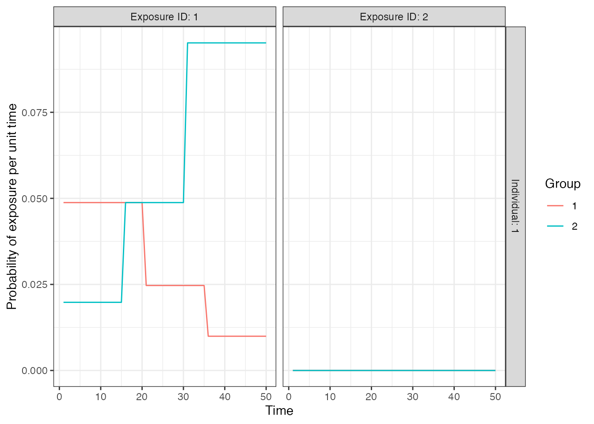
2.3 Antibody and immunity models
The inference methods we will be using (serofoi,
Rsero and serosolver) have embedded models
(whether explicit or implicit) for seroconversion or expected antibody
level as a function fo time-since-infection. The serocatalytic model of
serofoi makes the simplest assumption that individuals
become seropositive indefinitely following exposure, though extensions
of the serocatalytic model such as those in Rsero can also
account for seroreversion. The serosolver model is slightly
more complicated with an embedded boosting and waning model, though
under the assumption that all post-exposure kinetics are governed by the
same magnitude of boost and wane. In reality, there is substantial
heterogeneity in post-exposure antibody kinetics, and thus here we
simulate a boosting and monophasic waning antibody process with random
effects on the individual boosting and waning rate parameters (i.e., the
kinetics of each exposure are governed by a randomly drawn set of
parameter values). For the immunity model, we will assume that
individuals have fairly strong antibody-mediated immunity.
We assume that post-infection antibody boosts are log-normally distributed with a mean of 4 and a standard deviation (on the log scale) of 2. This boost wanes at approximately 0.008 units per year (log-normally distributed, standard deviation of 0.025). Post-vaccination boosts are assumed to be lower with a mean boost of 2 units (log-normally distributed, standard deviation of 1), and wane slower at a rate of 0.005 units per year (log-normally distributed, standard deviation of 0.025). Although it takes a long time for most individuals to serorevert, the individual-level heterogeneity means that some individuals wane from seropositive to seronegative levels within the time frame of the simulation.
## Assume that immunity from infection is dependent on latent biomarker level at time of exposure
p_immunity <- plot_biomarker_mediated_protection(seq(0,8,by=0.1), 2, 2)
## Tibble of model parameter controls related to infection immunity
model_pars_immunity <- tibble("exposure_id"="ifxn","biomarker_id"="IgG",
"name"=c("biomarker_prot_midpoint","biomarker_prot_width"),
"mean"=c(2,2),"sd"=NA,"distribution"="")
## See example in help file
immunity_model <- immunity_model_vacc_ifxn_biomarker_prot
## Specify the antibody model
antibody_model<-antibody_model_monophasic
## Bring in the antibody parameters needed for the antibody model
model_pars_path <- system.file("extdata", "model_pars_README.csv", package = "serosim")
model_pars_original <- read.csv(file = model_pars_path, header = TRUE)
model_pars <- reformat_biomarker_map(bind_rows(model_pars_original,model_pars_immunity))
model_pars[model_pars$name == "wane" & model_pars$exposure_id == 1,"mean"] <- 0.008
model_pars[model_pars$name == "wane" & model_pars$exposure_id == 2,"mean"] <- 0.005
model_pars[model_pars$name == "wane","sd"] <- 0.025
## Specify the draw_parameters function
draw_parameters<-draw_parameters_random_fx
## Plot example biomarker trajectories given the specified antibody kinetics model,
## model parameters and draw parameters function
p_antibody <- plot_antibody_model(antibody_model_monophasic, N=100, model_pars=model_pars %>% drop_na(),
draw_parameters_fn = draw_parameters_random_fx,
biomarker_map=biomarker_map)
p_immunity + ggtitle("Relationship between pre-exposure biomarker level\n and probability of infection")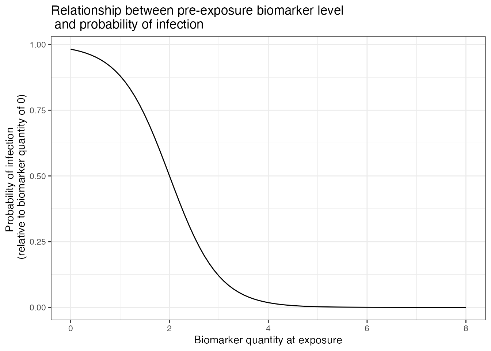
p_antibody + ggtitle("100 randomly drawn post-exposure biomarker trajectories")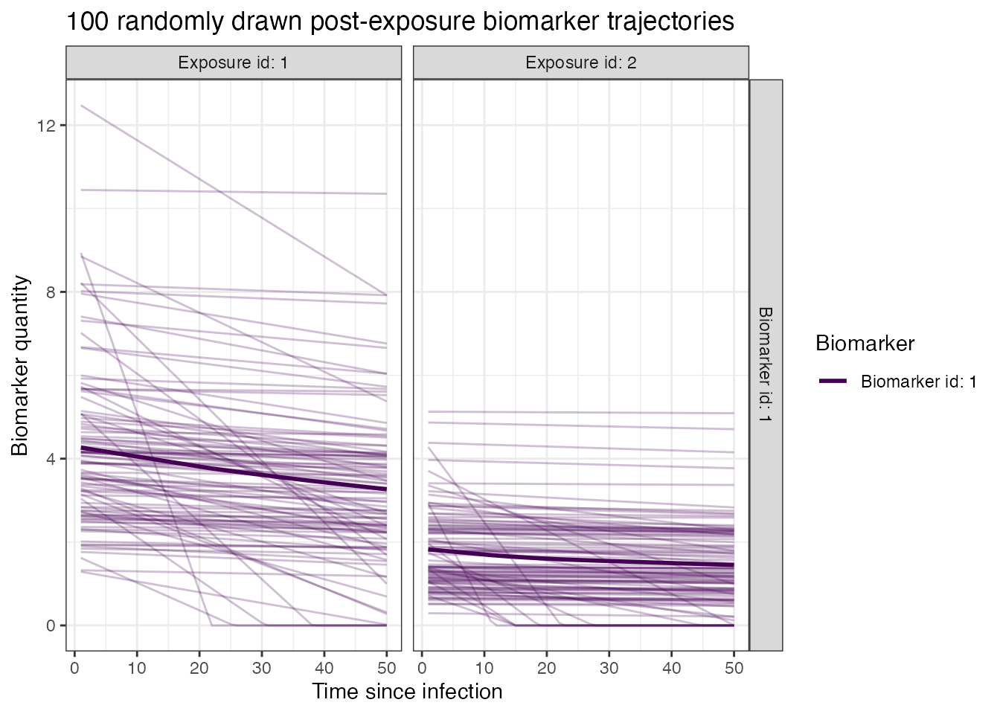
2.4 Observation model
Finally, we must define the sampling frame and characteristics of the diagnostic test. We assume that there is a reasonable amount of measurement error to introduce a degree of misclassification (observations are normally distributed around the true biomarker level with upper and lower bounds), and that the assay has imperfect sensitivity and specificity. We will simulated the scenario where each individual has two serum samples taken: one in the 48th year of the simulation, the other in the 50th and final year.
## Specify the observation model
observation_model<-observation_model_continuous_bounded_noise
## Specify assay sensitivity and specificity needed for the observation model
model_pars_original[model_pars_original$name =="obs_sd","sd"] <- 0.5
sensitivity<-0.85
specificity<-0.95
bounds <- dplyr::tibble(biomarker_id=1,name=c("lower_bound","upper_bound"),value=c(1,10))
## Specify observation_times (serological survey sampling design) to observe
## biomarker 1 at two time points around t 80 and 110
observation_times <- tibble(i=rep(1:max(demography$i),each=2),t=rep(c(48,50),N))2.5 serosim run
With all of the models and parameters in place, we now run the
simulation. Inspect the res object to see some
visualizations of the ground-truth simulation.
## Run the core simulation and save outputs in "res"
res<- runserosim(
simulation_settings,
demography,
observation_times,
foe_pars,
biomarker_map,
model_pars,
exposure_model,
immunity_model,
antibody_model,
observation_model,
draw_parameters,
## Other arguments needed
bounds=bounds,
max_events=max_events,
vacc_exposures=vacc_exposures,
vacc_age=vacc_age,
sensitivity=sensitivity,
specificity=specificity
)
#> Joining with `by = join_by(i, t)`
#> Joining with `by = join_by(i)`
#> Joining with `by = join_by(i)`3.0 Estimating the force of infection using a serocatalytic model
Our first aim is to see how well our serological study design allows us to estimate the ground-truth FOI over time. There are many methods for estimating the FOI from serological data, but the most commonly used is the serocatalytic model. Serocatalytic models make the assumption that individuals become seropositive at a rate proportional to the FOI, and thus over a long period of time, the age-stratified distribution of seroprevalence is related to the FOI as:
\[
P(a, t) = 1-exp(-\sum_{i=t-a+1}^t \lambda_i)
\] where \(\lambda_i\) is the
FOI in year \(i\) and \(P(a,t)\) is the seroprevalence of age group
\(a\) at time \(t\). We will use the serofoi
package to fit this model to our simulated serological study data,
noting that the simple fitted model does not explictly account for the
kinetics of the antibody response nor the imperfect performance of the
antibody assay. Furthermore, the serocatalytic model fits to
seropositivity data rather than antibody level. Thus, we can
also explore the consequences of using different thresholds to classify
individuals as seropositive or seronegative.
3.1 Running the serofoi package
We load the serofoi package, clean our simulated dataset
into the format expected by the main serofoi functions, and
then attempt to re-estimate the ground-truth FOI in our two study
locations. We use the time-varying FOI model from serofoi,
which allows the FOI to vary over time using a random-walk prior to
allow the FOI to change smoothly over time. We only take the latest
serum sample for each individual, though note that more complex
serocatalytic models can combine multiple observations per person or
cross-sections.
library(serofoi)
## Pull our the observed biomarker states and combine with the demography data to get each individual's age
serodat <- res$observed_biomarker_states %>% select(i, t, observed) %>% filter(t == 50)
demog <- res$demography %>% select(i, birth, location) %>% distinct()
serodat <- left_join(serodat, demog, by="i")
## Create a custom function for summarizing the simulated serosurvey data into seroprevalence by age,
## then fit the serocatalytic model to the Rural and Urban location data.
fit_serofoi <- function(seropos_cutoff = 1.5, serodat, true_foi){
summary <- serodat %>% dplyr::mutate(age = t - birth) %>%
dplyr::mutate(seropos=observed >= seropos_cutoff) %>%
group_by(age, location, t) %>%
dplyr::summarise(total=n(),counts=sum(seropos),.groups = "drop") %>% ungroup() %>%
dplyr::mutate(age_min = age, age_max=age) %>%
dplyr::mutate(test="sim",antibody="IgG",country="sim") %>%
dplyr::rename(tsur=t, survey=location)
serodat_rural <- prepare_serodata(summary %>% filter(survey=="Rural"))
model_rural <- run_seromodel(serodat_rural,foi_model = "tv_normal",n_iters=3000)
p_rural <- plot_seromodel(model_rural, size_text = 8,foi_sim=true_foi[2,,1])
serodat_urban <- prepare_serodata(summary %>% filter(survey=="Urban"))
model_urban <- run_seromodel(serodat_urban,foi_model = "tv_normal",n_iters=3000)
p_urban <- plot_seromodel(model_urban, size_text = 8,foi_sim=true_foi[1,,1])
p_rural | p_urban
}
## Compare results for different seropositivity thresholds
p1 <- fit_serofoi(1.25,serodat, foe_pars)
p2 <- fit_serofoi(2,serodat, foe_pars)
## Seropositivity threshold of 1.25
p1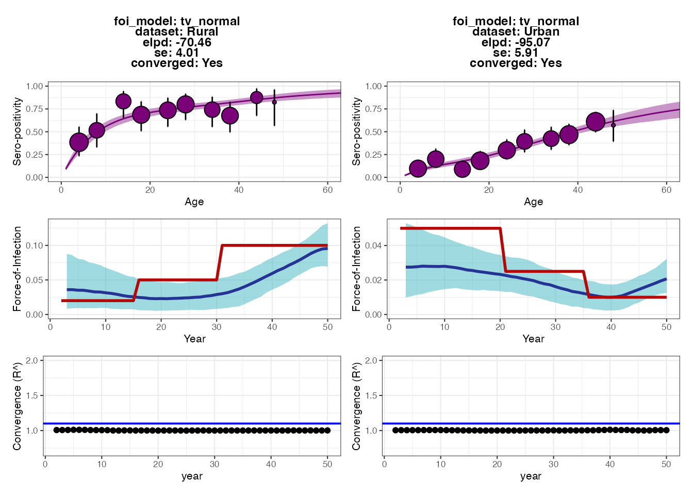
## Seropositivity threshold of 2
p2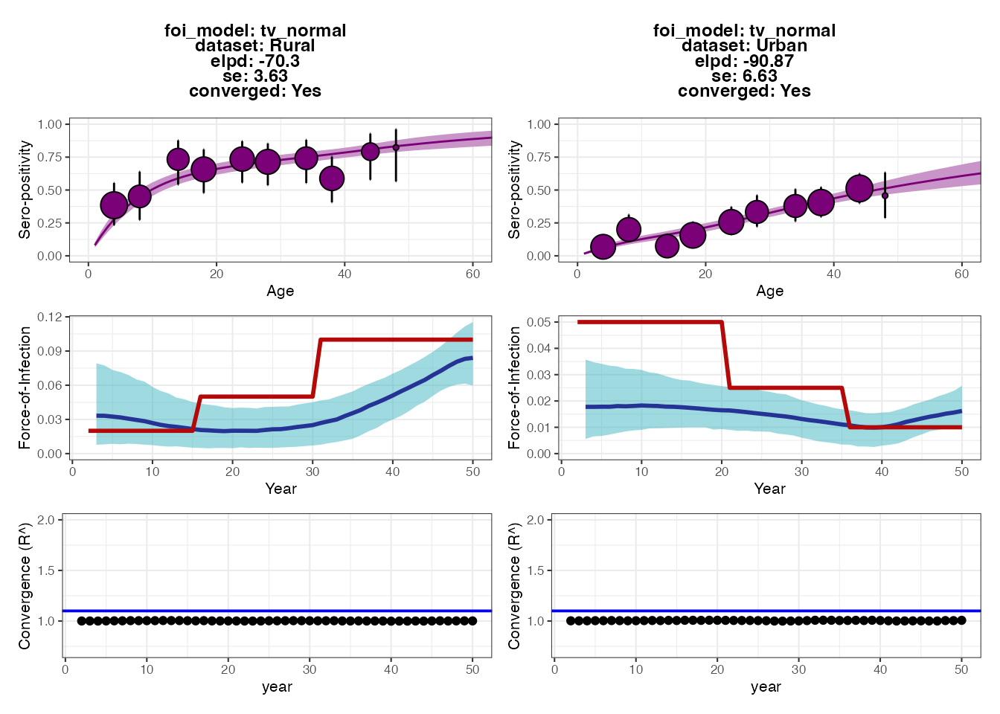 Each set of plots shows the results from fitting the serocatalytic model under different thresholds for classifying individuals as seropositive (antibody measurement above 1.25 or 2). Within each set of 6 subplots, the top subplots show the model fits to the age-stratified seroprevalence data, whereas the middle subplots show the posteriors for estimated FOI (blue ribbon and solid line) compared to the ground-truth (solid red line). The bottom subplots show the convergence diagnostics (all black dots should be below the blue line).
The output plots from serofoi show that the model
provides FOI estimates that are of roughly the right magnitude and fit
the seroprevalence data well. The model also detects the directional
change of the FOI in the two populations, but does not fully recapture
the variation in FOI over time. The fits from the different
seropositivity thresholds do not appear to substantially change the fits
nor FOI estimates (perhaps the estimates from the higher threshold are
lower), though we can see some small differences in model fits based on
the expected log-predictive densities (the ELPD numbers in each plot’s
text; smaller values roughly correspond to better model predictive
performance).
As an exercise for the reader, we can check that a large part of the problem is due to antibody waning, which results in misclassifying some previously seropositive individuals as seronegative by year 50. Try making the model parameters for the waning rates much smaller (see snippet below) and then re-running all of the code up to this point. You should see that the estimated FOIs more closely correspond to the true FOI (blue vs. red lines). You might also try increasing the sample size or age distribution of the cohort, and increasing the sensitivity and specificity of the observation process.
## Make the antibody waning rates one order of magnitude slower with little variation
model_pars[model_pars$name == "wane" & model_pars$exposure_id == 1,"mean"] <- 0.0008
model_pars[model_pars$name == "wane" & model_pars$exposure_id == 2,"mean"] <- 0.0005
model_pars[model_pars$name == "wane","sd"] <- 0.000253.2 Adding vaccination to the simulation and re-running
serofoi
For many pathogens, particularly vaccine-preventable diseases, it can be difficult to interpret serological data when antibody levels are elevated both through natural exposure and vaccination. Let’s see how including vaccination in the simulation affects the inferred FOI of natural infection in the two regions. We will assume that the vaccination rate is very high in the Urban location but very low in the Rural location. In reality, if vaccination rates were this high then we would likely not attempt to interpret the FOI estimates from the simple serocatalytic model. But for illustration purposes, we can see how failing to account for vaccination will lead to significantly biased FOI estimates.
## Specify the force of exposure for exposure ID 2 which represents vaccination
foe_pars[1,,2] <- 0.25
foe_pars[2,,2] <- 0.01
plot_exposure_model(exposure_model=exposure_model_simple_FOE, times=times,
n_groups = 2, n_exposures = 2, foe_pars=foe_pars)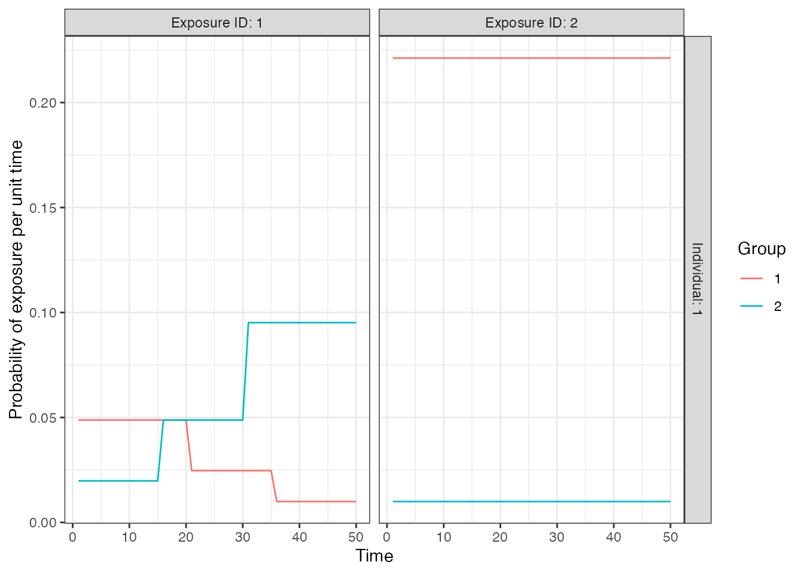
## Run the core simulation and save outputs in "res"
res_vaccination <- runserosim(simulation_settings,demography,observation_times,
foe_pars,biomarker_map,model_pars,
exposure_model,immunity_model,antibody_model,observation_model,
draw_parameters,bounds=bounds,max_events=max_events,
vacc_exposures=vacc_exposures,vacc_age=vacc_age,
sensitivity=sensitivity,specificity=specificity)
serodat_vaccine <- res_vaccination$observed_biomarker_states %>% select(i, t, observed) %>% filter(t == 50)
demog <- res_vaccination$demography %>% select(i, birth, location) %>% distinct()
serodat_vaccine <- left_join(serodat_vaccine, demog, by="i")
p_vaccine_foi <- fit_serofoi(2,serodat_vaccine, foe_pars)
p_vaccine_foi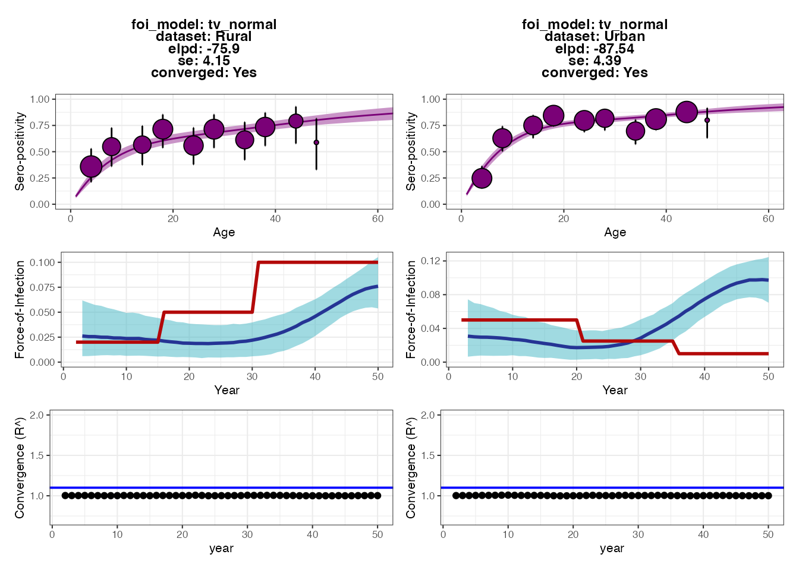
We can see that although the fits to the Rural dataset are fairly accurate, the model drastically overestimates the FOI in recent years for the Urban location. This is because the vaccination rate is so high that almost all individuals become seropositive within the first decade of life, and thus seropositivity alone cannot be used to estimate the FOI in the Urban location.
3.4 Summary
In this section, we showed how FOI estimates from a simple catalytic
model fitted to age-stratified seroprevalence data may be inaccurate or
even biased if we fail to account for key mechanisms of the
data-generating process (namely antibody waning in this case). An
iterative approach of comparing estimates from the fitted model to
ground truth from the simulation can be used to guide development of
minimum acceptable inference models. From this analysis, we might
consider refining the serocatalytic model in serofoi to
include seroreversion, or use an alternative tool (e.g., the Rsero R-package
also fits serocatalytic models using rstan, but allows for
the possibility of seroreversion).
4.0 Estimating exposure histories, attack rates and antibody
kinetics using serosolver
Our next inference method uses the serosolver
package to estimate not only which individuals have been exposed, but
also when each exposure event occurred. Like
serofoi, serosolver uses a Markov chain Monte
Carlo algorithm (MCMC) (in this case, a custom MCMC algorithm rather
than rstan) to estimate model parameters conditional on the
serological data. This approach differs in three ways from the
serocatalytic model:
- Rather than classify each individual as seropositive or seronegative, we estimate the probability that each individual has been exposed conditional on all of their antibody titer measurements.
- We estimate how many exposures each individual has experienced and the timing of each exposure conditional on their antibody titer measurements.
- The model estimates parameters of the measurement error process, and antibody boosting and waning dynamics through an embedded antibody kinetics model.
The aim of this experiment is to test how well the
serosolver model re-estimates the ground-truth exposure
histories and antibody kinetics parameters from serosim.
The key point is that the although the serosolver model
qualitatively describes the same behaviour as the serosim
model (monophasic boosting and waning with observation error), it
neglects some of the mechanisms underpinning the data-generating process
(antibody-mediated immunity, individual-level heterogeneity in boosting
and waning, false negatives and positives, different antibody kinetics
between infection and vaccination). We can then understand how this
model misspecification and oversimplification introduces error and bias
into the statistics we are ultimately interested in using real data –
the estimated exposure histories.
4.1 Setup
First, we ensure that the serosolver package is loaded,
set up a local cluster to run multiple MCMC chains in parallel, and
create empty directories to store the serosolver
outputs.
library(serosolver)
run_name <- "serosim_recovery" ## Name to give to created files
main_wd <- getwd()
## Create a directory to store the MCMC chains
chain_wd <- paste0(main_wd,"/chains/",run_name)
if(!dir.exists(chain_wd)) dir.create(chain_wd,recursive = TRUE)
#options(mc.cores=5)
n_chains <- 5 ## Number of MCMC chains to run
setwd(main_wd)
print(paste0("In directory: ", main_wd))
#> [1] "In directory: /Users/arthur/Documents/GitHub/serosim/vignettes"
print(paste0("Saving to: ", chain_wd))
#> [1] "Saving to: /Users/arthur/Documents/GitHub/serosim/vignettes/chains/serosim_recovery"
## Run multiple chains in parallel
## R CMD check only allows a maximum of two cores
cl <- makeCluster(2)
registerDoParallel(cl)Next, we will pull the serological data from the serosim
output object (res) and use a custom function
(convert_serodata_to_serosolver, defined in this vignette
in a hidden codeblock above). We merge this with the demography table to
denote which location each individual is in.
## Some data cleaning to convert the serosim output into the format expected by serosolver
sero_data <- convert_serodata_to_serosolver(res$observed_biomarker_states %>% left_join(demography %>% select(-times) %>% distinct(),by="i"))
## Note each individual's group/location
sero_data <- sero_data %>% select(-group) %>% left_join(res$demography %>% select(i, group) %>% distinct() %>% dplyr::rename(individual=i), by="individual")The next stage is a little bit trickier, as we need to make some
tweaks to the serosolver inputs. First, we’ll read in the
parameter table of the serosolver model (NOTE: different to
the serosim parameter table above). Please refer to the serosolver
vignettes for more information. Briefly, par_tab tells
serosolver which parameters are fixed and which are meant
to be estimated using the fixed variable
(fixed=0 denotes an estimated parameter), as well as their
value (if fixed) and upper and lower bounds.
## Set up parameter table
par_tab <- read.csv("par_tab_base.csv",stringsAsFactors=FALSE)We will make some assumptions and simplifications about the epidemic
model. serosolver assumes that each individual may or may
not be exposed in each time window of the model, and the exposure states
are independent between time periods (i.e., the exposure state is a
Bernoulli random variable as in serosim). A beta prior is
placed on the per-time probability of exposure for all individuals,
controlled by two parameters – we can adjust these parameters to adjust
the attack rate prior.
## These are the alpha and beta priors on the Beta distribution prior on the per-time attack rate.
## Set to 1/1 for uniform, can e.g., set to 1/100 to represent a strong prior on low per-time attack rate.
par_tab[par_tab$names %in% c("alpha","beta"),"values"] <- c(1,1)In the simulation, we assumed that individuals could be exposed in
each of 50 years (i.e., an individual aged 50 or over could be infected
between 0 and 50 times). This is clearly many exposure states to impute,
and given we only have two biomarker measurements per individual, we
restrict the parameter space to be explored. Here, we estimate exposure
states in 5-year windows (i.e., was an individual infected in this
5-year period?) for historic times, and in 1-year windows for the final
5 years of the simulation. The vector exposure_times
demarcates the lower bound of each of these time windows. We consider
the “true” exposure state to be whether or not an individual was exposed
at least once in each of these time windows.
## Setup some inputs for serosolver -- this just tells the function the vector of possible
## exposure times. The antigenic map is uninformative here, but is used in other examples
## to capture cross-reactivity
#exposure_times <- seq(1,max(sero_data$samples),by=1) # If we wanted to estimated exposure states for each of 50 years
exposure_times <- c(seq(1,45,by=5), 46:50)
true_inf_hist <- res$exposure_histories_long
true_inf_hist$t_group <- cut(true_inf_hist$t, breaks=exposure_times) # Note which time block each exposure time is in
## THis is a data structure used by serosolver for antigenically variable pathogens -- it can be largely ignored here
antigenic_map <- data.frame("x_coord"=1,"y_coord"=1,"inf_times"=exposure_times)
## Total number of exposures
sum(true_inf_hist$value,na.rm=TRUE)
#> [1] 567
true_inf_hist <- convert_inf_hist_to_serosolver(true_inf_hist,exposure_times) # Convert the true exposure history to the format expected by serosolver
#> `summarise()` has grouped output by 'i'. You can override using the `.groups`
#> argument.
#> Using x as value column: use value.var to override.Part of fitting the serosolver model is to estimated the
antibody kinetics model parameters. Jointly estimated exposure states
and antibody kinetics is a challenging inference problem with potential
identifiability issues. We therefore place a strong prior on the waning
rate parameter to aid with identifiability.
4.2 Running serosolver
We are now ready to run serosolver and fit the model to
our simulated data. The code below runs n_chains in
parallel using foreach. Within each iteration, we must
specify where in parameter space the MCMC chain starts – the
while loop generates random initial parameter values and
exposure histories until it finds one which returns a finite likelihood,
and uses this as initial values for the MCMC.
## Set up posterior function for later. Data_type=2 is for continuous data
f <- create_posterior_func(par_tab,sero_data,version=2,data_type=2,antigenic_map=antigenic_map)
#> Setting to continuous, bounded observations
#>
#> Creating posterior solving function...
#>
## Time runs and use dopar to run multiple chains in parallel
t1 <- Sys.time()
filenames <- paste0(chain_wd, "/",run_name, "_",1:n_chains)
output <- foreach(x = filenames, .packages = c('data.table','plyr',"dplyr","serosolver")) %dopar% {
index <- 1
## Try generating random starting values until we find a set that returns a finite likelihood
lik <- -Inf
inf_hist_correct <- 1
while((!is.finite(lik) || inf_hist_correct > 0) & index < 100){
start_tab <- generate_start_tab(par_tab)
start_inf <- setup_infection_histories_total(sero_data,exposure_times,1,100)
inf_hist_correct <- sum(check_inf_hist(sero_data, exposure_times, start_inf))
y <- f(start_tab$values, start_inf)
lik <- sum(y[[1]])
index <- index + 1
}
## Run serosolver!
output <- serosolver::run_MCMC(start_tab, sero_data,
strain_isolation_times = exposure_times,
start_inf_hist=start_inf,
filename=x,
antigenic_map=antigenic_map,
CREATE_POSTERIOR_FUNC=create_posterior_func,
CREATE_PRIOR_FUNC = prior_func,
version=2,
mcmc_pars=mcmc_pars,
data_type=2)
}4.3 Plotting the serosolver outputs and comparing to
the simulation ground-truth
We now check that the MCMC chains have converged, and then compare
the serosolver estimates to the serosim
gorund-truth. We can see that the MCMC chains are well mixed and
converged, and that the upper 95% CI for the R-hat diagnostic is <1.1
for all model parameters (if it isn’t, we would ned to run the chains
for more iterations).
## Read in the MCMC chains and create a trace plot
chains <- load_mcmc_chains(chain_wd,par_tab=par_tab,convert_mcmc=TRUE,burnin = mcmc_pars["adaptive_period"],unfixed = TRUE)
#> Chains detected: 5
#>
#> Highest MCMC sample interations:
#>
#> 1000001
#> 1000001
#> 1000001
#> 1000001
#> 1000001
#> Chains detected:
#> /Users/arthur/Documents/GitHub/serosim/vignettes/chains/serosim_recovery/serosim_recovery_1_infection_histories.csv
#> /Users/arthur/Documents/GitHub/serosim/vignettes/chains/serosim_recovery/serosim_recovery_2_infection_histories.csv
#> /Users/arthur/Documents/GitHub/serosim/vignettes/chains/serosim_recovery/serosim_recovery_3_infection_histories.csv
#> /Users/arthur/Documents/GitHub/serosim/vignettes/chains/serosim_recovery/serosim_recovery_4_infection_histories.csv
#> /Users/arthur/Documents/GitHub/serosim/vignettes/chains/serosim_recovery/serosim_recovery_5_infection_histories.csv
#>
#> Reading in infection history chains. May take a while.
#> Number of rows:
#> [[1]]
#> [1] 1454341
#>
#> [[2]]
#> [1] 1411258
#>
#> [[3]]
#> [1] 1398593
#>
#> [[4]]
#> [1] 1443899
#>
#> [[5]]
#> [1] 1462049
## Save traceplots from coda package
chains$theta_chain %>% as_tibble() %>%
dplyr::select(sampno, chain_no, mu_short, wane, error,total_infections) %>%
pivot_longer(-c(sampno,chain_no)) %>%
mutate(chain_no=as.factor(chain_no)) %>%
ggplot() + geom_line(aes(x=sampno,y=value,col=chain_no)) +
facet_wrap(~name,scales="free_y",ncol=2)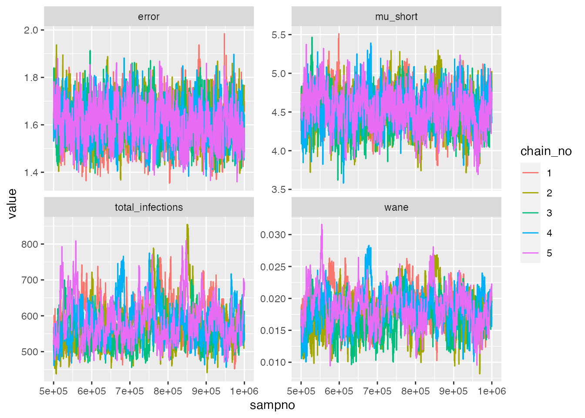
## Check Rhat statistic for antibody kinetics parameters
list_chains <- chains$theta_list_chains
list_chains <- lapply(list_chains, function(x) x[,(colnames(x) %in% c("mu_short","wane","error","total_infections"))])
gelman.diag(as.mcmc.list(list_chains))
#> Potential scale reduction factors:
#>
#> Point est. Upper C.I.
#> mu_short 1.01 1.03
#> wane 1.02 1.03
#> error 1.01 1.03
#> total_infections 1.02 1.04
#>
#> Multivariate psrf
#>
#> 1.02
effectiveSize(as.mcmc.list(list_chains))
#> mu_short wane error total_infections
#> 633.8537 255.8345 653.9727 220.9138Next, we interrogate the estimates from serosolver. We
can see that the 95% credible intervals (CrI) on the estimated total
number of exposures captures the true value. It also looks like we are
slightly overestimating the boosting and waning rates, despite the
strong prior on the waning rate. This may not be too surprising: the
simulation model has substantial heterogeneity in the degree of antibody
boosting and waning, as well as sources of observation error not
captured in the serosolver model. The error in the
serosolver estimates are likely a reflection of failing to
account for these mechanisms. However, overall, the estimates are not
too far from truth.
## Read in chains for all other plots
chains <- load_mcmc_chains(chain_wd,convert_mcmc=FALSE,burnin = mcmc_pars["adaptive_period"],unfixed = FALSE)
chain <- as.data.frame(chains$theta_chain)
inf_chain <- chains$inf_chain
## Total number of infections
print(paste0("True number of exposures: ", sum(true_inf_hist)))
#> [1] "True number of exposures: 558"
print(paste0("Estimated median and 95% CrI on number of exposures: ",
median(chains$theta_chain$total_infections), " (",
quantile(chains$theta_chain$total_infections, 0.025), "-",
quantile(chains$theta_chain$total_infections, 0.975), ")"))
#> [1] "Estimated median and 95% CrI on number of exposures: 565 (489-710)"
print(paste0("True boosting mean: ", model_pars[model_pars$exposure_id == 1 & model_pars$name == "boost", "mean"]))
#> [1] "True boosting mean: 4"
print(paste0("Estimated boosting (posterior mean and 95% CrI): ", signif(mean(chains$theta_chain$mu_short),3), " (",
signif(quantile(chains$theta_chain$mu_short, 0.025),3), "-",
signif(quantile(chains$theta_chain$mu_short, 0.975),3), ")"))
#> [1] "Estimated boosting (posterior mean and 95% CrI): 4.52 (4.06-4.99)"
print(paste0("True waning rate mean: ", model_pars[model_pars$exposure_id == 1 & model_pars$name == "wane", "mean"]))
#> [1] "True waning rate mean: 0.008"
print(paste0("Estimated waning rate (posterior mean and 95% CrI): ", signif(mean(chains$theta_chain$wane),3), " (",
signif(quantile(chains$theta_chain$wane, 0.025),3), "-",
signif(quantile(chains$theta_chain$wane, 0.975),3), ")"))
#> [1] "Estimated waning rate (posterior mean and 95% CrI): 0.0182 (0.0126-0.0241)"One of the estimates we are most concerned with are the individual
exposure histories. The following two plots show the estimated exposure
histories from serosolver for 25 individuals in two ways.
The first plot shows the cumulative number of exposures over time – the
x-axis gives the time-period, and the plotted line moves up by one one
the y-axis when an exposure is imputed. The solid blue line shows the
true cumulative exposure history, whereas the coloured regions and lines
show the posterior 95% CrI and median estimated by
serosolver. Note that the different colours represent
estimates from the 5 different MCMC chains.
## Plot individual infection history estimates
p_cumu_infs <- generate_cumulative_inf_plots(inf_chain,indivs=1:25,
real_inf_hist = as.matrix(true_inf_hist),
strain_isolation_times = exposure_times,nsamp=100,
number_col = 5)
p_cumu_infs[[1]]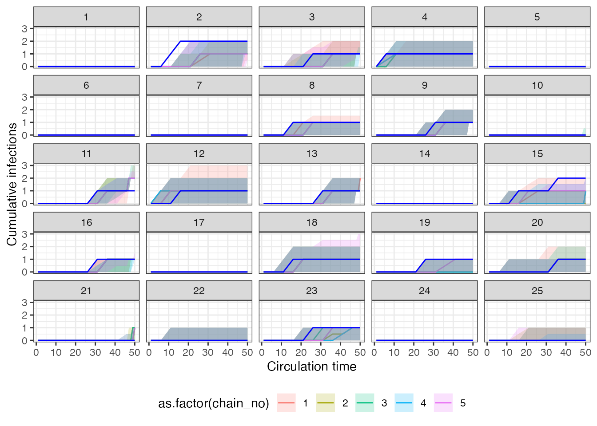 The second plot shows the posterior density that an individual was infected in a given time period – the x-axis is the same time-axis as the previous plot, but now the y-axis is the posterior probabily of an exposure in that time period. The vertical red lines show the timing of true infections, and the coloured lines show the posterior probabilities from each of the 5 MCMC chains.
p_cumu_infs[[2]]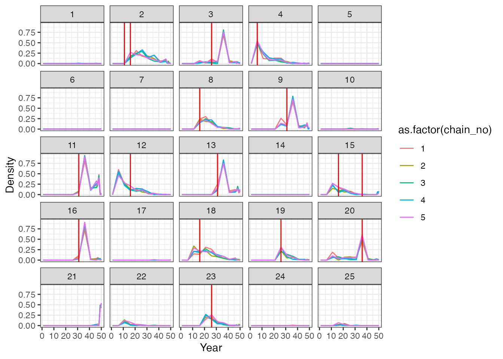
Overall, we see that although we largely estimated the correct total number of exposures per person, the timings of these exposure events is off in places. This is somewhat unsurprising – we are trying to infer the timing of events that happened many years before our measurements were taken. Thus, the only information the model has to back-calculate these infection events is the antibody waning rate.
We next compare the model-estimate attack rates for the two locations (urban and rural) to the ground truth. The following plot shows the posterior mean and 95% CrI on the proportion of the alive population exposed in that each time period (red pointrange) compared to the ground truth (purple points). The blue pointranges denote time periods in which serum samples were taken. The left-hand plot corresponds to the urban location, whereas the right-hand plot corresponds to the rural location. We see substantial uncertainty in time periods further back in time, reflecting the smaller number of alive individuals in those older time periods. We can also roughly see the trend of decreasing incidence over time in the urban population and higher recent incidence in the rural population, however, the estimates are not particularly precise, and we are substantially underestimating the attack rates in the 5-year windows starting in year 31 and year 41. It seems likely that those exposures are being incorrectly placed in the time window around year 36.
## Plot attack rates
## Get number alive in each time point and true number of exposures per time point
inf_chain <- inf_chain %>% left_join(res$demography %>% select(i, group) %>% distinct())
#> Joining with `by = join_by(i)`
## Get number of individuals alive to be exposed in each time period by group
n_alive <- get_n_alive_group(sero_data, exposure_times)
colnames(true_inf_hist) <- exposure_times
## Get true number of exposures from serosim output by time period
n_inf <- true_inf_hist %>%
as_tibble() %>%
dplyr::mutate(i = 1:n()) %>%
pivot_longer(-i) %>%
dplyr::mutate(name = as.numeric(name)) %>%
left_join(res$demography %>% select(i, group) %>% distinct()) %>% group_by(name, group) %>%
dplyr::summarize(ar=sum(value))
#> Joining with `by = join_by(i)`
#> `summarise()` has grouped output by 'name'. You can override using the
#> `.groups` argument.
n_alive <- n_alive %>%
as_tibble() %>%
dplyr::mutate(group=1:n()) %>%
pivot_longer(-group) %>%
dplyr::mutate(name=as.numeric(name))
## Create tibble of true per-time attack rates
true_ar <- n_inf %>% left_join(n_alive) %>% mutate(AR = ar/value) %>% dplyr::rename(j=name)
#> Joining with `by = join_by(name, group)`
## Group 2 is the rural location, group 1 is the urban location
p_ar <- plot_attack_rates(inf_chain, sero_data, exposure_times,true_ar=true_ar,by_group=TRUE,pad_chain=FALSE)
#> Scale for y is already present.
#> Adding another scale for y, which will replace the existing scale.
#> Coordinate system already present. Adding new coordinate system, which will
#> replace the existing one.
#> Scale for x is already present.
#> Adding another scale for x, which will replace the existing scale.
p_ar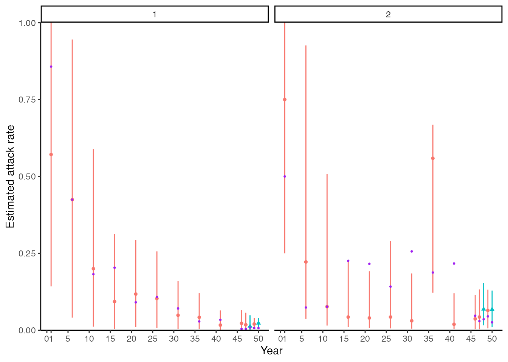
Finally, we compare the model-estimated biomarker kinetics for each individual to the observed data. Each subplot corresponds to one individual, where the x-axis represents time and the y-axis represents biomarker measurement. The black dots show the observed data, whereas the green shaded region and solid line shows the posterior 95% prediction intervals, 95% CrI and posterior mean. The vertical orange bars show the posterior probability of an exposure event at that time period. The model fits seem reasonable, but unsurprisingly, the latent antibody levels going back in time demonstrate substantial uncertainty as the timings of exposure are not estimated precisely.
## Plot model fits to titre data. We expand the sero_data object so that the function plots
## for all possible times, not just those with observation times.
sero_data_tmp <- expand_sero_data(sero_data, exposure_times)
#> Joining with `by = join_by(individual)`
#> Joining with `by = join_by(individual, samples)`
titre_pred_p <- plot_infection_histories(chain = chain[chain$chain_no == 1,],
infection_histories = inf_chain[inf_chain$chain_no == 1,],
titre_dat = sero_data_tmp,
individuals = 1:25,
strain_isolation_times = exposure_times,
nsamp = 100, # Needs to be smaller than length of sampled chain
par_tab = par_tab,p_ncol=5, data_type=2)
#> Setting to continuous, bounded observations
#>
#> Creating model solving function...
#>
titre_pred_p
#> Warning: Removed 180 rows containing missing values (`geom_point()`).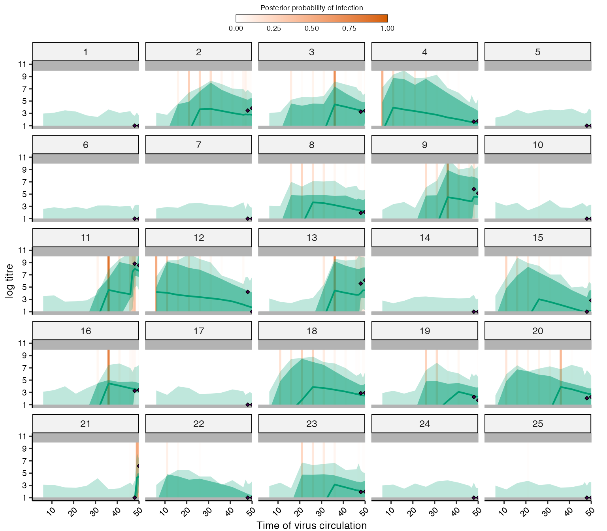
4.4 Summary
As in the serofoi section, there are many different ways
in which we could further our simulation-recovery experiments. We see
that serosolver is broadly able to re-estimate the
individual exposure histories, antibody kinetics model parameters (with
a strong prior on the waning rate), and population attack rates.
However, there were some biases and inaccuracies in our estimates,
highlighting the consequences of a fitted model which does not quite
match the generative model, and also limits of identifiability from
fitting a fairly complex model to a relatively small dataset. Some
suggestions for further experiments the reader might try are:
- Fitting the
serosolvermodel to the simulation including vaccination (res_vaccination). - Adjusting the time windows of the inferred exposure histories to understand the time resolution that can be reliably inferred from the current serological study design.
- Simulating larger serological studies with more and individuals and/or more longitudinal samples per individual.
5.0 Conclusions
In this vignette, we have seen how serosim can be used
to generate synthetic data for testing two inference packages:
serofoi and serosolver. Both inference
packages have functionality for simulating data from the fitted model –
a recommended test prior to fitting any statistical model to real data,
but arguably an easy test given that the fitted model is correctly
specified. Crucially, the serosim model included realistic,
complex processes which we expect to be important for generating our
data, but which are infeasible to include in our fitted models. Despite
this model misspecification/over-simplification, both packages generate
useful and reasonable estimates for the force of exposure, exposure
histories and antibody kinetics, but with some error and bias. We
suggest that this process of simulation-recovery using a simulation
model that is different to the fitted model is a useful approach for
understanding the performance of seroepidemiological inference methods
prior to fitting to real data.